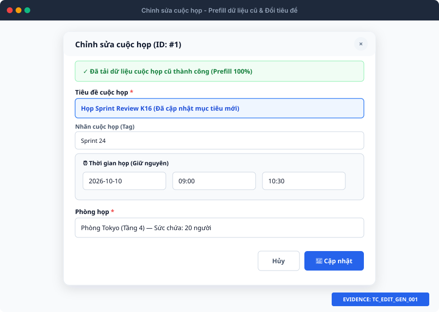
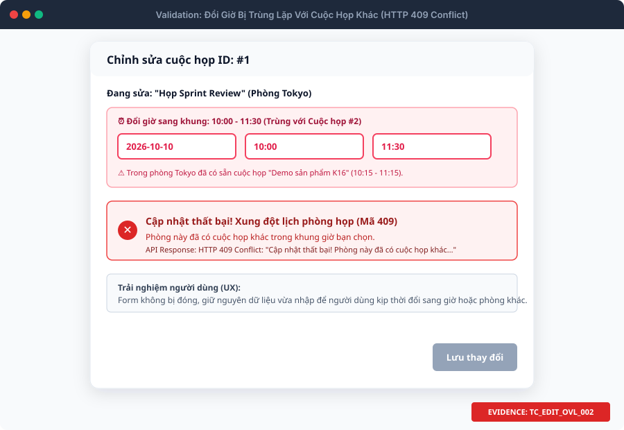
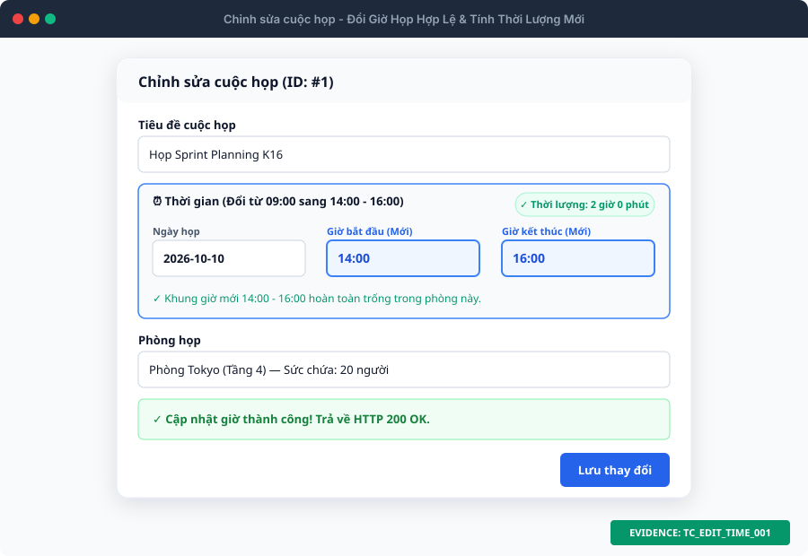
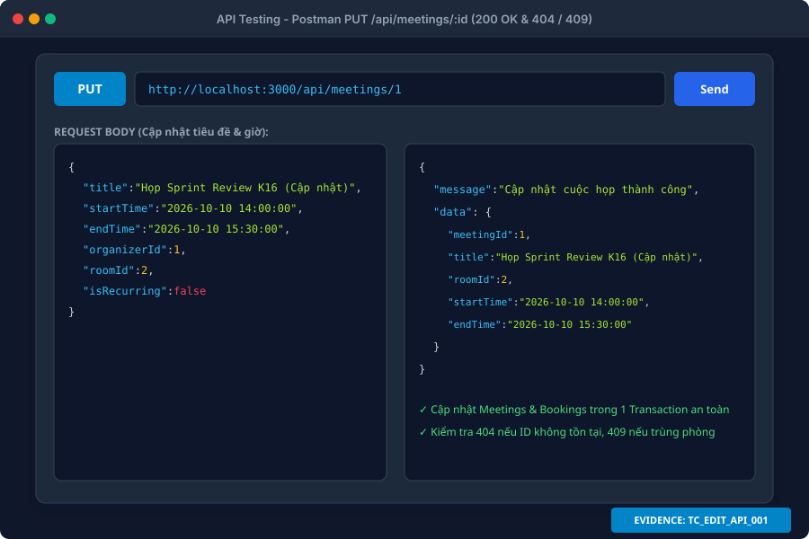

QA Specification • US 2.0
Có ảnh minh chứng
Sprint 2 • TTCS_T926_K16C2_N3
Bộ Test Cases Luồng Chỉnh Sửa Cuộc Họp
Kiểm thử đổi giờ, đổi phòng, kiểm tra trùng lặp thông minh loại trừ chính nó (Self-Exclusion) & API PUT
Tổng số Test Cases
40
Đầy đủ 5 nhóm kịch bản
Trùng Lặp & Self-Exclusion
8 TCs
Loại trừ chính nó & 409 Conflict
Đổi Ngày & Giờ / Đổi Phòng
14 TCs
Thời lượng, quá khứ, đổi Bookings
API PUT Backend
6 TCs
200 OK, 400 Bad Request, 404, 409
Thư Viện Ảnh Minh Chứng Luồng Chỉnh Sửa (Evidence Showcase)

1. Prefill dữ liệu cũ & Đổi tiêu đề
TC_EDIT_GEN_001 $
ightarrow$ TC_EDIT_GEN_012

2. Loại trừ chính nó (Self-Exclusion)
TC_EDIT_OVL_001 (m.MeetingID != 1 → 200 OK)

3. Xung đột lịch phòng khác (409 Conflict)
TC_EDIT_OVL_002 $
ightarrow$ TC_EDIT_OVL_008

4. Đổi giờ hợp lệ & Tính thời lượng mới
TC_EDIT_TIME_001, TC_EDIT_TIME_002

5. Đổi phòng họp (Cập nhật Bookings)
TC_EDIT_ROOM_001 $
ightarrow$ TC_EDIT_ROOM_004

6. API PUT /api/meetings/:id (200 OK)
TC_EDIT_API_001 $
ightarrow$ TC_EDIT_API_006
Hiển thị 40 / 40 test cases
| Test Case ID | Nhóm / Feature | Tiêu đề kịch bản | Pre-conditions | Test Steps | Test Data | Expected Result | Actual Result | Status | Ghi chú / Bug ID | Ảnh Minh Chứng |
|---|---|---|---|---|---|---|---|---|---|---|
| TC_EDIT_GEN_001 |
Thông tin chung Meeting / Edit Flow |
Mở modal Chỉnh sửa cuộc họp và kiểm tra prefill chính xác 100% dữ liệu cũ | 1. Đang ở màn hình Quản lý cuộc họp (/client/index.html). 2. Đã có cuộc họp ID=1 ('Họp nhóm phát triển Frontend', ngày mai 09:00 - 10:30, Phòng Tokyo, Organizer: Nguyễn Văn An). | 1. Tại bảng danh sách cuộc họp, tìm dòng cuộc họp ID=1. 2. Bấm nút Chỉnh sửa (icon chiếc bút chì). 3. Quan sát tiêu đề modal và các ô nhập liệu. | MeetingID: 1 Expected Fields: Title, Date, StartTime, EndTime, RoomID, OrganizerID, Participants, Tag, Description | 1. Modal mở lên mượt mà với tiêu đề 'Chỉnh sửa cuộc họp'. 2. Trường ẩn meeting-id có giá trị là '1'. 3. Toàn bộ các ô nhập liệu được đổ đầy đủ dữ liệu hiện tại của cuộc họp ID=1, không bị thiếu sót bất kỳ trường nào. 4. Con trỏ tự động focus vào ô Tiêu đề. | (Chờ test) | Untested | Kiểm tra prefill form đầy đủ khi mở modal sửa. | |
| TC_EDIT_GEN_002 |
Thông tin chung Meeting / Edit Flow |
Chỉnh sửa Tiêu đề cuộc họp hợp lệ (giữ nguyên ngày giờ và phòng) | 1. Đang mở modal Chỉnh sửa cuộc họp ID=1. | 1. Thay đổi nội dung ô Tiêu đề thành: 'Họp Sprint Review K16 (Cập nhật)'. 2. Giữ nguyên tất cả các trường Ngày, Giờ và Phòng họp. 3. Bấm nút 'Lưu thay đổi'. | MeetingID: 1 New Title: 'Họp Sprint Review K16 (Cập nhật)' Other fields: Unchanged | 1. Form vượt qua validation. 2. Gọi API PUT /api/meetings/1 thành công (HTTP 200 OK). 3. Hiển thị thông báo Toast xanh: 'Cập nhật cuộc họp thành công'. 4. Modal đóng lại, dòng ID=1 trên bảng hiển thị tiêu đề mới. | (Chờ test) | Untested | Kiểm tra sửa tiêu đề đơn thuần. | |
| TC_EDIT_GEN_003 |
Thông tin chung Meeting / Edit Flow |
Chỉnh sửa Mô tả và Nhãn cuộc họp (Tag) hợp lệ | 1. Đang mở modal Chỉnh sửa cuộc họp ID=1. | 1. Chọn Nhãn mới: 'Quan trọng' (hoặc click nút tag chip). 2. Nhập nội dung Mô tả mới: 'Thảo luận các đầu việc ưu tiên cao của tuần'. 3. Bấm nút 'Lưu thay đổi'. | MeetingID: 1 New Tag: 'Quan trọng' New Description: 'Thảo luận các đầu việc ưu tiên cao của tuần' | 1. Cập nhật thành công (HTTP 200 OK). 2. Bảng danh sách cập nhật nhãn màu đỏ (tag-danger) 'Quan trọng'. 3. Xem chi tiết cuộc họp hiển thị đúng nội dung mô tả mới. | (Chờ test) | Untested | Kiểm tra sửa trường tùy chọn tag & description. | |
| TC_EDIT_GEN_004 |
Thông tin chung Meeting / Edit Flow |
Chỉnh sửa Người tổ chức (organizerId) sang thành viên khác | 1. Đang mở modal Chỉnh sửa cuộc họp ID=1 (Organizer hiện tại là ID=1: Nguyễn Văn An). | 1. Mở phần Thiết lập bổ sung. 2. Đổi Người tổ chức sang: 'Trần Thu Hà (ID: 2 - Manager)'. 3. Bấm nút 'Lưu thay đổi'. | MeetingID: 1 New organizerId: 2 | 1. Máy chủ cập nhật trường OrganizerID = 2 trong bảng Meetings. 2. Phản hồi HTTP 200 OK, toast xanh thông báo thành công. | (Chờ test) | Untested | Kiểm tra chuyển giao người tổ chức. | |
| TC_EDIT_GEN_005 |
Thông tin chung Meeting / Edit Flow |
Chỉnh sửa danh sách Người tham gia cuộc họp | 1. Đang mở modal Chỉnh sửa cuộc họp ID=1. | 1. Thêm thành viên vào ô Người tham gia: 'Phạm Văn C, Đỗ Quang D'. 2. Bấm nút 'Lưu thay đổi'. | MeetingID: 1 New Participants: 'Nguyễn Minh Lượng, Trần Văn A, Lê Văn B, Phạm Văn C, Đỗ Quang D' | 1. Hệ thống cập nhật danh sách người tham gia. 2. Bảng cuộc họp hiển thị danh sách mới tại cột Người tham gia. | (Chờ test) | Untested | Kiểm tra cập nhật danh sách người dự. | |
| TC_EDIT_GEN_006 |
Thông tin chung Meeting / Edit Flow |
Chặn lưu khi xóa sạch trường Tiêu đề (bỏ trống tiêu đề khi sửa) | 1. Đang mở modal Chỉnh sửa cuộc họp ID=1. | 1. Xóa toàn bộ nội dung trong ô Tiêu đề (để ô trống hoàn toàn). 2. Bấm nút 'Lưu thay đổi'. | MeetingID: 1 Title: '' (Rỗng) | 1. Client chặn submit, form rung nhẹ cảnh báo. 2. Ô Tiêu đề bị viền đỏ (is-invalid) kèm icon chấm than đỏ. 3. Dòng lỗi hiển thị: 'Tiêu đề cuộc họp là bắt buộc và không được để trống.'. 4. Không gửi request lên server. | (Chờ test) | Untested | Validate bắt buộc tiêu đề khi sửa. | |
| TC_EDIT_GEN_007 |
Thông tin chung Meeting / Edit Flow |
Chặn lưu khi Tiêu đề chỉ chứa toàn ký tự khoảng trắng khi chỉnh sửa | 1. Đang mở modal Chỉnh sửa cuộc họp ID=1. | 1. Nhập vào ô Tiêu đề: ' ' (toàn khoảng trắng). 2. Bấm nút 'Lưu thay đổi'. | MeetingID: 1 Title: ' ' | 1. Hàm trim() phát hiện chuỗi rỗng sau khi cắt khoảng trắng. 2. Form chặn submit, hiển thị viền đỏ và thông báo lỗi tiêu đề bắt buộc. | (Chờ test) | Untested | Chống bypass trim rỗng khi sửa. | |
| TC_EDIT_GEN_008 |
Thông tin chung Meeting / Edit Flow |
Chặn lưu khi Tiêu đề vượt quá độ dài tối đa cho phép (> 200 ký tự) khi chỉnh sửa | 1. Đang mở modal Chỉnh sửa cuộc họp ID=1. | 1. Dán chuỗi 205 ký tự vào ô Tiêu đề. 2. Bấm nút 'Lưu thay đổi'. | MeetingID: 1 Title: Chuỗi 205 ký tự | 1. Thuộc tính maxlength='200' ngăn nhập quá 200 ký tự hoặc JS validate chặn với thông báo: 'Tiêu đề cuộc họp không được vượt quá 200 ký tự (chuẩn CSDL).'. 2. Bảo toàn toàn vẹn dữ liệu DB. | (Chờ test) | Untested | Kiểm tra giới hạn ký tự tối đa cột Title. | |
| TC_EDIT_GEN_009 |
Thông tin chung Meeting / Edit Flow |
Chặn lưu khi Mô tả vượt quá độ dài tối đa cho phép (> 2000 ký tự) khi chỉnh sửa | 1. Đang mở modal Chỉnh sửa cuộc họp ID=1. | 1. Dán văn bản dài 2050 ký tự vào ô Mô tả. 2. Bấm nút 'Lưu thay đổi'. | MeetingID: 1 Description: Chuỗi 2050 ký tự | 1. Form chặn submit. 2. Hiển thị thông báo lỗi màu đỏ: 'Mô tả cuộc họp không được vượt quá 2000 ký tự.'. 3. Ô Mô tả bị viền đỏ. | (Chờ test) | Untested | Kiểm tra giới hạn ký tự tối đa cột Description. | |
| TC_EDIT_GEN_010 |
Thông tin chung Meeting / Edit Flow |
Chặn lưu khi Tiêu đề chứa ký tự đặc biệt nguy hiểm (<, > / XSS) | 1. Đang mở modal Chỉnh sửa cuộc họp ID=1. | 1. Nhập Tiêu đề: 'Họp <script>alert(1)</script>'. 2. Bấm nút 'Lưu thay đổi'. | MeetingID: 1 Title: 'Họp <script>alert(1)</script>' | 1. Client phát hiện ký tự đặc biệt nguy hiểm. 2. Báo lỗi: 'Tiêu đề không được chứa ký tự đặc biệt nguy hiểm (<, >).'. 3. Không lưu dữ liệu độc hại vào DB. | (Chờ test) | Untested | Bảo mật phòng chống XSS khi sửa. | |
| TC_EDIT_GEN_011 |
Thông tin chung Meeting / Edit Flow |
Đóng modal chỉnh sửa (bấm nút Hủy, nút X hoặc click ngoài overlay) - Giữ nguyên dữ liệu cũ | 1. Đang mở modal Chỉnh sửa cuộc họp ID=1. 2. Đã gõ thử tiêu đề mới nhưng chưa bấm Lưu. | 1. Thao tác 1: Bấm nút 'Hủy'. 2. Thao tác 2: Mở lại và bấm nút 'X' góc trên bên phải. 3. Thao tác 3: Mở lại và click vào vùng tối bên ngoài modal. | MeetingID: 1 Chưa lưu dữ liệu thay đổi | 1. Modal đóng lại mượt mà. 2. Bản ghi cuộc họp ID=1 trên bảng giữ nguyên 100% dữ liệu gốc ban đầu. 3. Không bị cập nhật dữ liệu dở dang. | (Chờ test) | Untested | Kiểm tra thao tác hủy chỉnh sửa an toàn. | |
| TC_EDIT_GEN_012 |
Thông tin chung Meeting / Edit Flow |
Reset form sạch sẽ khi chuyển từ chỉnh sửa sang tạo mới cuộc họp | 1. Vừa mở modal chỉnh sửa cuộc họp ID=1 và đóng lại. | 1. Bấm nút '+ Thêm cuộc họp' ở đầu trang. 2. Quan sát tiêu đề modal và các ô nhập liệu. | Action: Mở form thêm mới sau khi đóng form sửa | 1. Tiêu đề modal chuyển thành 'Thêm cuộc họp'. 2. Trường hidden meeting-id được reset về rỗng (''). 3. Toàn bộ các ô Tiêu đề, Mô tả, Tag... được làm sạch hoàn toàn, không bị dính dữ liệu cũ của cuộc họp ID=1. | (Chờ test) | Untested | Kiểm tra state management tránh rò rỉ dữ liệu giữa edit và add. | |
| TC_EDIT_TIME_001 |
Đổi ngày & giờ Meeting / Edit Time |
Đổi giờ bắt đầu và kết thúc sang khung giờ mới hợp lệ trong cùng ngày (phòng trống) | 1. Cuộc họp ID=1 đang có giờ: 09:00 - 10:30 ngày 2026-10-10 tại Phòng Tokyo. 2. Khung giờ 14:00 - 16:00 cùng ngày tại Phòng Tokyo đang hoàn toàn trống. | 1. Mở modal chỉnh sửa ID=1. 2. Đổi Giờ bắt đầu thành: '14:00'. 3. Đổi Giờ kết thúc thành: '16:00'. 4. Bấm nút 'Lưu thay đổi'. | MeetingID: 1 New StartTime: 14:00 New EndTime: 16:00 New Duration: 2 giờ 0 phút | 1. Duration Badge cập nhật trực tiếp: 'Thời lượng: 2 giờ 0 phút'. 2. Cập nhật thành công (HTTP 200 OK). 3. Cột Ngày giờ trên bảng danh sách đổi thành: '2026-10-10 (14:00 - 16:00)'. | (Chờ test) | Untested | Kiểm tra đổi giờ họp hợp lệ trong ngày. | |
| TC_EDIT_TIME_002 |
Đổi ngày & giờ Meeting / Edit Time |
Đổi Ngày họp sang một ngày khác trong tương lai (phòng trống) | 1. Cuộc họp ID=1 đang diễn ra ngày 2026-10-10. 2. Ngày 2026-10-15 khung 09:00 - 10:30 phòng Tokyo đang trống. | 1. Mở modal chỉnh sửa ID=1. 2. Đổi Ngày họp thành: '2026-10-15'. 3. Bấm nút 'Lưu thay đổi'. | MeetingID: 1 New Date: 2026-10-15 StartTime: 09:00 EndTime: 10:30 | 1. Hệ thống cập nhật ngày mới vào CSDL. 2. Bảng danh sách hiển thị ngày họp mới là 15/10/2026. | (Chờ test) | Untested | Kiểm tra đổi ngày họp sang tương lai. | |
| TC_EDIT_TIME_003 |
Đổi ngày & giờ Meeting / Edit Time |
Chặn lưu khi đổi thời gian khiến giờ kết thúc sớm hơn giờ bắt đầu (start > end) | 1. Đang mở modal Chỉnh sửa cuộc họp ID=1. | 1. Chọn Giờ bắt đầu: '16:00'. 2. Chọn Giờ kết thúc: '15:00' (sớm hơn bắt đầu 1 tiếng). 3. Bấm nút 'Lưu thay đổi'. | MeetingID: 1 StartTime: 16:00 EndTime: 15:00 (diffMinutes = -60) | 1. Form chặn submit. 2. Duration Badge hiển thị cảnh báo không hợp lệ. 3. Hộp cảnh báo lỗi thời gian (#time-error-msg) hiển thị chữ đỏ: 'Thời gian kết thúc phải lớn hơn thời gian bắt đầu. Vui lòng kiểm tra lại.'. 4. Ô Giờ kết thúc viền đỏ. | (Chờ test) | Untested | Validate thứ tự thời gian khi sửa. | |
| TC_EDIT_TIME_004 |
Đổi ngày & giờ Meeting / Edit Time |
Chặn lưu khi đổi thời gian khiến giờ bắt đầu trùng giờ kết thúc (start == end, thời lượng 0 phút) | 1. Đang mở modal Chỉnh sửa cuộc họp ID=1. | 1. Chọn Giờ bắt đầu: '10:00'. 2. Chọn Giờ kết thúc: '10:00'. 3. Bấm nút 'Lưu thay đổi'. | MeetingID: 1 StartTime: 10:00 EndTime: 10:00 (diffMinutes = 0) | 1. Form chặn submit. 2. Báo lỗi: 'Thời gian kết thúc phải lớn hơn thời gian bắt đầu.'. 3. Không gửi request lên server. | (Chờ test) | Untested | Chặn thời lượng 0 phút khi sửa. | |
| TC_EDIT_TIME_005 |
Đổi ngày & giờ Meeting / Edit Time |
Chặn lưu khi đổi Ngày họp sang thời điểm trong quá khứ | 1. Đang mở modal Chỉnh sửa cuộc họp ID=1. | 1. Đổi Ngày họp thành: '2026-09-20' (ngày đã trôi qua trong quá khứ). 2. Bấm nút 'Lưu thay đổi'. | MeetingID: 1 Date: 2026-09-20 (Quá khứ) | 1. Hệ thống phát hiện thời điểm bắt đầu nhỏ hơn thời điểm hiện tại. 2. Chặn submit form. 3. Hiển thị box thông báo lỗi: 'Thời gian bắt đầu không thể diễn ra trong quá khứ.'. 4. Ô Ngày họp bị viền đỏ. | (Chờ test) | Untested | Chặn lùi lịch về quá khứ. | |
| TC_EDIT_TIME_006 |
Đổi ngày & giờ Meeting / Edit Time |
Chặn lưu khi chọn Ngày là hôm nay nhưng đổi Giờ bắt đầu đã trôi qua trong quá khứ | 1. Giả sử thời gian hiện tại là 15:00 chiều hôm nay. 2. Đang mở modal Chỉnh sửa cuộc họp. | 1. Chọn Ngày: Hôm nay. 2. Đổi Giờ bắt đầu thành '09:00' (giờ sáng đã trôi qua). 3. Bấm nút 'Lưu thay đổi'. | Date: Hôm nay StartTime: 09:00 (< current time 15:00) | 1. Hệ thống so sánh startDateTime với thời điểm hiện tại và phát hiện đã quá hạn. 2. Báo lỗi: 'Thời gian bắt đầu không thể diễn ra trong quá khứ.'. | (Chờ test) | Untested | Chặn giờ đã trôi qua trong cùng ngày khi sửa. | |
| TC_EDIT_TIME_007 |
Đổi ngày & giờ Meeting / Edit Time |
Chặn lưu khi đổi thời lượng cuộc họp nhỏ hơn 5 phút (ví dụ: 3 phút) | 1. Đang mở modal Chỉnh sửa cuộc họp ID=1. | 1. Đổi Giờ bắt đầu: '09:00'. 2. Đổi Giờ kết thúc: '09:03' (thời lượng 3 phút). 3. Bấm nút 'Lưu thay đổi'. | MeetingID: 1 StartTime: 09:00 EndTime: 09:03 (diffMinutes = 3) | 1. Form chặn submit. 2. Hiển thị thông báo lỗi màu đỏ: 'Thời lượng cuộc họp tối thiểu phải từ 5 phút trở lên.'. 3. Ô Giờ kết thúc viền đỏ. | (Chờ test) | Untested | Validate thời lượng tối thiểu 5m khi sửa. | |
| TC_EDIT_TIME_008 |
Đổi ngày & giờ Meeting / Edit Time |
Giá trị biên dưới hợp lệ: Cho phép đổi thời lượng cuộc họp đúng chính xác 5 phút (Min Boundary) | 1. Đang mở modal Chỉnh sửa cuộc họp ID=1. | 1. Đổi Giờ bắt đầu: '09:00'. 2. Đổi Giờ kết thúc: '09:05' (đúng 5 phút). 3. Bấm nút 'Lưu thay đổi'. | MeetingID: 1 StartTime: 09:00 EndTime: 09:05 (diffMinutes = 5) | 1. Live Duration Badge hiển thị: 'Thời lượng: 5 phút'. 2. Không có cảnh báo lỗi thời lượng. 3. Cập nhật thành công (HTTP 200 OK). | (Chờ test) | Untested | Kiểm tra giá trị biên dưới hợp lệ 5 phút khi sửa. | |
| TC_EDIT_TIME_009 |
Đổi ngày & giờ Meeting / Edit Time |
Chặn lưu khi đổi thời lượng cuộc họp vượt quá giới hạn tối đa (> 24 giờ) | 1. Gửi request cập nhật hoặc thao tác trên form. | 1. Đổi thời gian kéo dài hơn 24 giờ (Ví dụ: Start 08:00 ngày 10/10 đến End 10:00 ngày 11/10 - 26 giờ). 2. Bấm nút 'Lưu thay đổi'. | MeetingID: 1 Duration: 26 giờ (> 24 giờ) | 1. Form hoặc API chặn submit. 2. Báo lỗi: 'Thời lượng cuộc họp không được vượt quá 24 giờ trong một lần đặt.'. | (Chờ test) | Untested | Validate giới hạn thời lượng tối đa 24h khi sửa. | |
| TC_EDIT_TIME_010 |
Đổi ngày & giờ Meeting / Edit Time |
Kiểm tra cập nhật Dynamic Duration Badge khi chỉnh sửa thay đổi giờ bắt đầu và kết thúc | 1. Đang mở modal Chỉnh sửa cuộc họp ID=1. | 1. Đổi Giờ kết thúc sang '09:45' -> Quan sát badge. 2. Đổi tiếp sang '11:00' -> Quan sát badge. 3. Đổi tiếp sang '12:30' -> Quan sát badge. | Start: 09:00 End lần lượt: 09:45 (45p), 11:00 (2h0p), 12:30 (3h30p) | 1. Dynamic Duration Badge cập nhật ngay lập tức theo thời gian thực (real-time): - 'Thời lượng: 45 phút' - 'Thời lượng: 2 giờ 0 phút' - 'Thời lượng: 3 giờ 30 phút'. | (Chờ test) | Untested | Kiểm tra tính phản hồi của live calculator trên modal sửa. | |
| TC_EDIT_ROOM_001 |
Đổi phòng họp Meeting / Edit Room |
Đổi phòng họp sang phòng khác (phòng mới trống trong cùng khung giờ) - Cập nhật bảng Bookings | 1. Cuộc họp ID=1 đang đặt tại Phòng Tokyo (ID=1) lúc 09:00 - 10:30 ngày mai. 2. Phòng Silicon (ID=2) đang Active và hoàn toàn trống trong khung 09:00 - 10:30. | 1. Mở modal chỉnh sửa ID=1. 2. Tại ô Phòng họp, chọn: 'Phòng Silicon (Tầng 2) — Sức chứa: 12 người'. 3. Giữ nguyên khung giờ 09:00 - 10:30. 4. Bấm nút 'Lưu thay đổi'. | MeetingID: 1 Old RoomID: 1 (Tokyo) New RoomID: 2 (Silicon) | 1. Hệ thống cập nhật bảng Bookings: SET RoomID = 2 WHERE MeetingID = 1. 2. Trả về HTTP 200 OK. 3. Toast xanh báo thành công. 4. Cột Địa điểm/Phòng trên bảng danh sách chuyển sang hiển thị 'Phòng Silicon (Tầng 2)'. 5. Phòng Tokyo cũ được giải phóng hoàn toàn trong khung giờ này. | (Chờ test) | Untested | Kiểm tra đổi phòng họp và giải phóng phòng cũ. | |
| TC_EDIT_ROOM_002 |
Đổi phòng họp Meeting / Edit Room |
Đổi đồng thời cả Phòng họp và Giờ họp sang thông tin mới hợp lệ | 1. Đang mở modal Chỉnh sửa cuộc họp ID=1. 2. Phòng Hội Nghị A (ID=3) đang trống vào buổi chiều 14:00 - 16:00. | 1. Đổi Phòng họp sang: 'Phòng Hội Nghị A (ID: 3)'. 2. Đổi Giờ bắt đầu: '14:00', Giờ kết thúc: '16:00'. 3. Bấm nút 'Lưu thay đổi'. | MeetingID: 1 New RoomID: 3 New Time: 14:00 - 16:00 | 1. Cập nhật thành công cả 2 bảng Meetings và Bookings. 2. Trả về HTTP 200 OK. 3. Giao diện cập nhật đúng cả phòng mới và giờ mới. | (Chờ test) | Untested | Kiểm tra đổi đồng thời cả phòng và thời gian. | |
| TC_EDIT_ROOM_003 |
Đổi phòng họp Meeting / Edit Room |
Chặn đổi sang phòng họp đang trong trạng thái Bảo trì (Maintenance) hoặc Tạm ngừng | 1. Phòng VIP (ID=5) đang có trạng thái 'Maintenance' trong CSDL. | 1. Mở modal chỉnh sửa ID=1. 2. Chọn chuyển sang Phòng VIP (ID: 5). 3. Bấm nút 'Lưu thay đổi'. | MeetingID: 1 New RoomID: 5 (Status = Maintenance) | 1. Phía Client hoặc Server chặn cập nhật. 2. Báo lỗi: 'Phòng VIP hiện không khả dụng (Trạng thái: Bảo trì). Vui lòng chọn phòng khác.'. 3. Cuộc họp không bị chuyển vào phòng đang bảo trì. | (Chờ test) | Untested | Chặn đổi vào phòng không khả dụng. | |
| TC_EDIT_ROOM_004 |
Đổi phòng họp Meeting / Edit Room |
Đổi sang phòng có sức chứa lớn hơn cho cuộc họp phát sinh đông người | 1. Cuộc họp ban đầu ở phòng nhỏ 12 chỗ (Silicon), số lượng người tham gia tăng lên 35 người. 2. Phòng Grand Board (ID=4, sức chứa 50 chỗ) đang trống. | 1. Mở modal chỉnh sửa ID=1. 2. Đổi sang Phòng Grand Board (50 chỗ). 3. Bấm nút 'Lưu thay đổi'. | MeetingID: 1 New RoomID: 4 (Grand Board - 50 chỗ) | 1. Cập nhật thành công (HTTP 200 OK). 2. Cuộc họp được gán thành công vào phòng có sức chứa lớn hơn. | (Chờ test) | Untested | Kiểm tra chuyển phòng theo quy mô sức chứa. | |
| TC_EDIT_OVL_001 |
Kiểm tra trùng lặp Meeting / Overlap Self-Exclusion |
LOẠI TRỪ CHÍNH NÓ (Self-Exclusion): Giữ nguyên giờ & phòng khi sửa -> KHÔNG ĐƯỢC báo trùng lặp với chính nó | 1. Cuộc họp ID=1 đang chiếm phòng Tokyo lúc 09:00 - 10:30 ngày 2026-10-10. 2. Mở modal chỉnh sửa ID=1. | 1. Chỉ sửa nội dung ô Tiêu đề thành: 'Họp Sprint Review (Cập nhật ghi chú)'. 2. Giữ nguyên 100% Ngày (2026-10-10), Giờ (09:00 - 10:30) và Phòng (Tokyo). 3. Bấm nút 'Lưu thay đổi'. | MeetingID: 1 RoomID: 1 (Tokyo - Giữ nguyên) Time: 09:00 - 10:30 (Giữ nguyên) | 1. Client: Hàm checkMeetingRoomConflict(..., editId=1) nhận diện đúng ID hiện tại và BỎ QUA không báo trùng. 2. Server: Câu lệnh SQL kiểm tra Overlap có điều kiện 'm.MeetingID != 1' -> Trả về isOverlap = false. 3. Máy chủ KHÔNG trả về lỗi 409 Conflict. 4. Cập nhật thành công, trả về HTTP 200 OK và hiển thị toast xanh. | (Chờ test) | Untested | Ca kiểm thử cốt lõi nhất của luồng sửa: Ngăn chặn tự báo trùng với chính mình. | |
| TC_EDIT_OVL_002 |
Kiểm tra trùng lặp Meeting / Overlap Conflict |
Chặn đổi giờ khi khung giờ mới bị trùng lặp hoàn toàn (100% overlap) với cuộc họp KHÁC trong cùng phòng | 1. Trong Phòng Tokyo (ID=1) đã có cuộc họp ID=2 lúc 14:00 - 15:30 ngày mai. 2. Đang sửa cuộc họp ID=1 (đang ở khung giờ 09:00 - 10:30). | 1. Mở modal chỉnh sửa cuộc họp ID=1. 2. Đổi giờ họp ID=1 thành: 14:00 - 15:30 (trùng 100% với cuộc họp ID=2). 3. Bấm nút 'Lưu thay đổi'. | MeetingID: 1 New Time: 14:00 - 15:30 (Trùng với Meeting ID=2 trong phòng Tokyo) | 1. Hệ thống phát hiện xung đột lịch phòng với cuộc họp ID=2. 2. Phía Client: Hiển thị box đỏ cảnh báo phòng đã có người đặt. 3. Phía Server: checkOverlapUpdate phát hiện trùng, trả về mã HTTP 409 Conflict: 'Cập nhật thất bại! Phòng này đã có cuộc họp khác trong khung giờ bạn chọn.'. 4. Không cho phép ghi đè. | (Chờ test) | Untested | Chặn trùng lặp hoàn toàn với cuộc họp khác. | |
| TC_EDIT_OVL_003 |
Kiểm tra trùng lặp Meeting / Overlap Conflict |
Chặn đổi giờ khi khung giờ mới chồng lấn một phần đầu (Start-overlap) với cuộc họp KHÁC | 1. Phòng Tokyo đã có cuộc họp ID=2 từ 14:00 đến 15:30. | 1. Mở modal chỉnh sửa ID=1. 2. Đổi giờ ID=1 thành: 13:30 - 14:30 (chồng lấn 30 phút từ 14:00 đến 14:30). 3. Bấm nút 'Lưu thay đổi'. | MeetingID: 1 New Time: 13:30 - 14:30 (Giao nhau phần đầu với 14:00 - 15:30) | 1. Thuật toán Overlap (StartTime < EndExist && EndTime > StartExist && MeetingID != 1) trả về True. 2. Hệ thống từ chối cập nhật, trả về HTTP 409 Conflict. 3. Form giữ nguyên dữ liệu để người dùng đổi lại giờ. | (Chờ test) | Untested | Chặn chồng lấn phần đầu với cuộc họp khác. | |
| TC_EDIT_OVL_004 |
Kiểm tra trùng lặp Meeting / Overlap Conflict |
Chặn đổi giờ khi khung giờ mới chồng lấn một phần cuối (End-overlap) với cuộc họp KHÁC | 1. Phòng Tokyo đã có cuộc họp ID=2 từ 14:00 đến 15:30. | 1. Mở modal chỉnh sửa ID=1. 2. Đổi giờ ID=1 thành: 15:00 - 16:30 (chồng lấn 30 phút từ 15:00 đến 15:30). 3. Bấm nút 'Lưu thay đổi'. | MeetingID: 1 New Time: 15:00 - 16:30 (Giao nhau phần cuối) | 1. Phát hiện trùng lặp. 2. Từ chối cập nhật với mã lỗi HTTP 409 Conflict. 3. Cuộc họp ID=1 giữ nguyên lịch cũ. | (Chờ test) | Untested | Chặn chồng lấn phần cuối với cuộc họp khác. | |
| TC_EDIT_OVL_005 |
Kiểm tra trùng lặp Meeting / Overlap Conflict |
Chặn đổi giờ khi khung giờ mới nằm lọt thỏm hoàn toàn bên trong cuộc họp KHÁC | 1. Phòng Tokyo đã có cuộc họp ID=2 từ 13:00 đến 17:00. | 1. Mở modal chỉnh sửa ID=1. 2. Đổi giờ ID=1 thành: 14:00 - 15:00 (nằm trọn bên trong 13:00 - 17:00). 3. Bấm nút 'Lưu thay đổi'. | MeetingID: 1 New Time: 14:00 - 15:00 (Inside 13:00 - 17:00) | 1. Hệ thống phát hiện xung đột. 2. Trả về HTTP 409 Conflict, chặn lưu. | (Chờ test) | Untested | Chặn lịch mới nằm lọt trong lịch khác. | |
| TC_EDIT_OVL_006 |
Kiểm tra trùng lặp Meeting / Overlap Conflict |
Chặn đổi giờ khi khung giờ mới bao trùm toàn bộ cuộc họp KHÁC | 1. Phòng Tokyo đã có cuộc họp ID=2 từ 14:00 đến 15:00. | 1. Mở modal chỉnh sửa ID=1. 2. Đổi giờ ID=1 thành: 13:30 - 15:30 (bao trọn khung 14:00 - 15:00). 3. Bấm nút 'Lưu thay đổi'. | MeetingID: 1 New Time: 13:30 - 15:30 (Enclosing 14:00 - 15:00) | 1. Hệ thống phát hiện cuộc họp ID=2 bị bao trùm. 2. Từ chối cập nhật với mã lỗi HTTP 409 Conflict. | (Chờ test) | Untested | Chặn lịch mới bao trùm lịch khác. | |
| TC_EDIT_OVL_007 |
Kiểm tra trùng lặp Meeting / Overlap Conflict |
Cho phép đổi giờ nối tiếp sát nút (Back-to-back: new StartTime == existing EndTime) - Hợp lệ | 1. Phòng Tokyo đã có cuộc họp ID=2 từ 14:00 đến 15:30. | 1. Mở modal chỉnh sửa ID=1. 2. Đổi giờ ID=1 thành: 15:30 - 17:00 (bắt đầu đúng tích tắc cuộc họp ID=2 kết thúc). 3. Bấm nút 'Lưu thay đổi'. | MeetingID: 1 New Time: 15:30 - 17:00 (Điểm bắt đầu trùng điểm kết thúc của ID=2) | 1. Phép so sánh (15:30 < 15:30) trả về False -> Không có xung đột. 2. Hệ thống chấp nhận cập nhật thành công (HTTP 200 OK). 3. Hai cuộc họp nối tiếp nhau trên lịch họp. | (Chờ test) | Untested | Kiểm tra biên tiếp xúc thời gian khi sửa. | |
| TC_EDIT_OVL_008 |
Kiểm tra trùng lặp Meeting / Overlap Conflict |
Chặn đổi sang phòng khác khi phòng mới bị trùng lịch họp ở khung giờ đó | 1. Cuộc họp ID=1 lúc 09:00 - 10:30. 2. Phòng Silicon (ID=2) ĐÃ CÓ cuộc họp ID=3 lúc 09:00 - 10:30. | 1. Mở modal chỉnh sửa ID=1. 2. Đổi phòng họp sang: Phòng Silicon (ID=2). 3. Bấm nút 'Lưu thay đổi'. | MeetingID: 1 New RoomID: 2 (Đã có ID=3 đặt trùng giờ) | 1. Thuật toán checkOverlapUpdate kiểm tra tại RoomID=2 phát hiện cuộc họp ID=3 bị trùng. 2. Trả về mã lỗi HTTP 409 Conflict: 'Cập nhật thất bại! Phòng này đã có cuộc họp khác trong khung giờ bạn chọn.'. 3. Chặn lưu. | (Chờ test) | Untested | Chặn đổi phòng khi phòng đích bị trùng lịch. | |
| TC_EDIT_API_001 |
API Backend Meeting / API PUT |
API PUT /api/meetings/:id cập nhật thành công và trả về HTTP 200 OK kèm payload chuẩn | 1. Máy chủ Backend đang chạy tại http://localhost:3000. 2. Đã có cuộc họp ID=1 trong CSDL. | 1. Mở Postman/cURL gửi request: PUT http://localhost:3000/api/meetings/1 Headers: Content-Type: application/json Body JSON đầy đủ thông tin hợp lệ. 2. Quan sát status code và JSON trả về. | PUT /api/meetings/1 { "title": "Họp Sprint Review K16 (API Update)", "startTime": "2026-10-10 14:00:00", "endTime": "2026-10-10 15:30:00", "organizerId": 1, "roomId": 2, "isRecurring": false } | 1. Mã phản hồi HTTP 200 OK. 2. JSON body trả về dạng: { "message": "Cập nhật cuộc họp thành công", "data": { "meetingId": 1, "title": "...", "roomId": 2, ... } } 3. CSDL được cập nhật đúng bản ghi. | (Chờ test) | Untested | Kiểm thử API Happy Path. | |
| TC_EDIT_API_002 |
API Backend Meeting / API PUT |
API PUT /api/meetings/:id trả về HTTP 404 Not Found khi ID cuộc họp không tồn tại | 1. Trong bảng Meetings không có cuộc họp nào có ID = 99999. | 1. Gửi request PUT http://localhost:3000/api/meetings/99999 với payload hợp lệ. 2. Quan sát phản hồi. | PUT /api/meetings/99999 | 1. Máy chủ bắt được error.status = 404 trong Model update. 2. Trả về HTTP 404 Not Found. 3. JSON: { "message": "Cuộc họp với ID 99999 không tồn tại." }. 4. Server không bị văng lỗi 500. | (Chờ test) | Untested | Kiểm tra xử lý lỗi 404 cuộc họp không tồn tại. | |
| TC_EDIT_API_003 |
API Backend Meeting / API PUT |
API PUT /api/meetings/:id trả về HTTP 400 Bad Request khi tham số ID không phải là số hợp lệ | 1. Backend đang chạy. | 1. Gửi request: PUT http://localhost:3000/api/meetings/abc. 2. Quan sát phản hồi. | PUT /api/meetings/abc | 1. Hàm parseInt(req.params.id, 10) phát hiện isNaN. 2. Trả về HTTP 400 Bad Request. 3. JSON: { "message": "ID cuộc họp không hợp lệ. Vui lòng nhập số." }. | (Chờ test) | Untested | Kiểm tra validate param ID là số. | |
| TC_EDIT_API_004 |
API Backend Meeting / API PUT |
API PUT /api/meetings/:id trả về HTTP 400 Bad Request khi thiếu các trường bắt buộc | 1. Backend đang chạy. | 1. Gửi request PUT /api/meetings/1 nhưng body JSON thiếu trường 'title' hoặc 'startTime' hoặc 'roomId'. 2. Quan sát phản hồi. | Body: { "description": "Chỉ gửi mô tả" } | 1. Controller kiểm tra if (!title || !startTime || !endTime || !organizerId || !roomId). 2. Trả về HTTP 400 Bad Request. 3. JSON: { "message": "Vui lòng nhập đủ các trường bắt buộc." }. | (Chờ test) | Untested | Kiểm tra validate thiếu trường phía API. | |
| TC_EDIT_API_005 |
API Backend Meeting / API PUT |
API PUT /api/meetings/:id trả về HTTP 400 Bad Request khi startTime >= endTime | 1. Backend đang chạy. | 1. Gửi PUT /api/meetings/1 với startTime: '2026-10-10 15:00:00', endTime: '2026-10-10 14:00:00'. 2. Quan sát phản hồi. | startTime >= endTime | 1. Controller kiểm tra if (new Date(startTime) >= new Date(endTime)). 2. Trả về HTTP 400 Bad Request. 3. JSON: { "message": "Thời gian kết thúc phải sau thời gian bắt đầu." }. | (Chờ test) | Untested | Kiểm tra validate thứ tự thời gian phía API. | |
| TC_EDIT_API_006 |
API Backend Meeting / API PUT |
API PUT /api/meetings/:id trả về HTTP 409 Conflict khi bị trùng lịch phòng khác | 1. Cuộc họp ID=2 đang đặt phòng ID=1 từ 14:00 đến 15:30. | 1. Gửi PUT /api/meetings/1 cập nhật vào phòng ID=1 khung 14:00 đến 15:30. 2. Quan sát phản hồi. | PUT /api/meetings/1 (Trùng với Meeting ID=2) | 1. Hàm checkOverlapUpdate trả về true. 2. Trả về HTTP 409 Conflict. 3. JSON: { "message": "Cập nhật thất bại! Phòng này đã có cuộc họp khác trong khung giờ bạn chọn." }. | (Chờ test) | Untested | Kiểm tra xử lý lỗi trùng phòng qua API. |